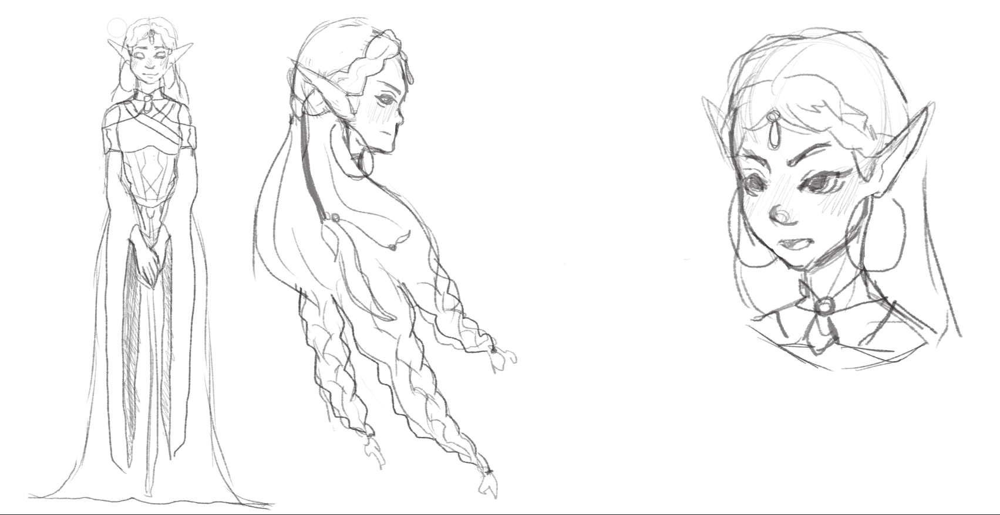

La Souveraine Elfique

Nom : Mira’Silva
Race : Elfe des bois/dryade
Taille : 1m60 dans sa forme normale et 1m80 dans sa forme de dryade
Poids : 52 kg
Age : 2600 ans
Physique :
Mira’Silva est une elfe des bois, mais conserve une apparence en grande partie humaine :sa peau, blanche, est envahie par des marques d’un bleu vert d’eau, tel des tatouages.
Ceux-ci prennent la forme de branches de ipomées, dont la tige est très fine et fait
apparaître des fleurs de tailles moyennes. Le cœur va en trompette, cinq traits sur les
pétales donnant un aspect hypnotique.
(Les fleurs ipomées peuvent être blanches avec des traits d’un rose ou violet pétant, roses
avec des traits violets, bleues aux détails rouges ou bien le tout violet, et par conséquent les
traits ne se voient pas autant.)
L’ipomée représente l'amitié dévouée. Elle symbolise [aussi la liaison facile et sans
conséquence ainsi que] l'incertitude.
De par son poids, Mira’Silva n’est pas ample (poitrine, hanches) mais reste féminine.
Au niveau du visage, il reflète bien sa personnalité : d’une nature calme et sincère,
Mira’Silva est une âme tendre, qui répugne à utiliser la violence de quelque façon que ce
soit.
Ses yeux bleus, un bleu pur, sont entourés de longs cils et de sourcils fins, légèrement
arqués vers le bas pour donner un air d’autorité.
Sa nature d’elfe des bois lui permet d’arborer des cheveux d’un vert printanier, qui rappelle
les jeunes pousses de feuilles, juste après l’éclosion. Ils descendent de façon harmonieuse
dans son dos, légèrement ondulés, et se terminent par de petites tresses, dans lesquelles
résident des éclats de lapis lazuli, une pierre bleue semi-précieuse.
Le lapis-lazuli a toujours été associé avec la force, le courage, la sagesse, l'intelligence et la
vérité.
Mental :
Bien que Maître(sse) du conseil magique, Mira’Silva n’a pas encore l’étoffe d’une leadeuse :se préoccupant de ce qui est juste et bon, plutôt que ce qui est nécessaire pour son peuple,
elle a du mal à accepter la dure réalité de la guerre. Et ce que cela implique. L’elfe est
souvent incappable de s’imposer, de frapper du point sur la table et exprimer clairement un
refus, et ses conseillers font de leur mieux pour l’endurcir.
Humble, douce et bienveillante, Mira’Silva répugne les conflits, et souhaite conserver la paix
et la tranquillité de son peuple.
Formes différentes :
Dans sa forme originelle, l’elfe a une peau légèrement teintée de vert vers le cœur. Lesformes/marques arborant sont corps sont des seaux pour ses pouvoirs de dryade.
Dans cette nouvelle forme, Mira’Silva gagne quelques centimètres : son corps se recouvre
totalement de vert et de nature, des lianes et feuilles, qui s’enroulent autour d’elle dans un
étaux protecteur. De grands morceaux d’écorce, dure comme le plus résistant des métaux,
se créés sur son crâne, comme une couronne.